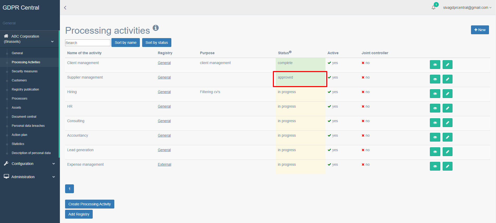
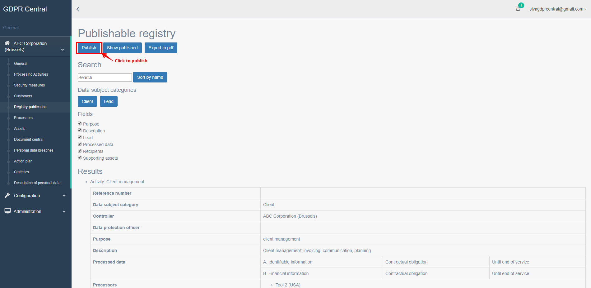

How do I publish a Processing Activity?¶
A Processing Activity that has been marked as ‘external’ can be published once they are approved. To approve or request an approval for a Processing Activity, please refer to How do I create a new Processing Activity?.
Once a Processing Activity is approved, you can publish the processing activity by performing the following steps:
Login to GDPR Central using your credentials if not already logged in.
In the left pane, under your organization, click Processing Activities.
A list of all Processing Activities for the customer are listed along with their statuses.
Click the View button () for the Processing Activity that needs to be published and the Processing Activities Details screen appears.
Please confirm that the Processing Activity is marked as ‘external’ and is in an ‘approved’ status from this screen. If this is not marked as external or is not approved, you will not be able to publish that Processing Activity.
Once verified, in the left pane, under your organization, click Registry Publication.
The Publishable Registry screen opens with a list of all Processing Activities ready to be published. Please ensure your approved Processing Activity marked as ‘external’ is also listed in this screen.
You have the following buttons in this screen:
Publish – Click this button to publish the processing activity to your external corporate site.
Show Published – Click this button to show the published page. You may potentially be prompted for username and password. Please get in touch with us if you would like to remove this.
Export to PDF – Click this button to export all the published page to PDF.
Click Publish button for the Processing Activity to be published to your external corporate site.
For more information on how to integrate publishing with corporate sites, please refer to :role:’How do I integrate publishing my Process Activity with corporate sites?’.